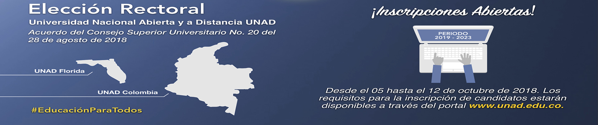

 |
La Universidad Nacional Abierta y a Distancia UNAD, en consideración al Salario Mínimo Legal Mensual Vigente (SMLMV) establecido mediante Decreto 2269 del 30 de diciembre de 2017 para la vigencia 2018 ($781.242); y de conformidad con la programación académica establecida por el Consejo Académico para el año 2018, se fijan los costos de matrícula y demás procesos académicos tal como se establecen en la Circular informativa 210-037 de Derechos pecuniarios del año 2018, así: | |
| Crédito académico regular | $ 88.000 | |
| Crédito académico de los cursos disciplinares comunes y disciplinares específicos de los programas de pregrado de la Escuela de Ciencias de la Salud, Escuela de Ciencias Básicas, Ingeniería y Tecnología y la Escuela de Ciencias Agrícolas, Pecuarias y del Medio Ambiente |
$ 97.000 | |
| Inscripción | $ 109.000 | |
|
| |||||
| Crédito académico del programa de tecnología en articulación con la educación media | $ 44.000 | |||||
| Crédito académico del programa tecnólogo de quienes continuen el proceso de articulación en el programa | 46.000 | |||||
|
|
|
| Crédito académico | $ 328.000 | |
| Inscripcióna | $ 174.000 | |
|
|
|
| Crédito académico | $ 508.000 | |
| Inscripcióna | $ 174.000 | |
|
El incremento del valor de la matrícula para los programas de educación básica y de educación media es del 5.9% para el 2018, correspondiente al porcentaje de incremento del salario mínimo legal mensual vigente. |
|
| Matrícula para los ciclos I, II, III y IV | de $504.000 a $781.000 | |
| Matrícula para los ciclos V y VI | de $252.000 a $391.000 | |
| Inscripción | de $20.000 a $39.000 | |
|
|
|
| Crédito académico para los programas de formación en lengua extranjera ofertados en mediación virtual | $102.000 | |
| Crédito académico para los programas de formación en lengua extranjera, a través de mediación virtual con componente práctico mayor a 39 horas | $ 117.000 | |
| Crédito académico de cursos de formación en lengua con propósitos específicos | $ 125.000 | |
|
|
|
| Matrícula de funcionarios administrativos, cuerpo docente y contratistas de la UNAD | $112.000 | |
| Matrícula de egresado de la UNAD | $106.000 | |
| Matrícula de personal externo a la UNAD | $458.000 | |
| Inscripción (Aplica para personas que se vinculan al programa por primera vez en la UNAD) | $109.000 | |